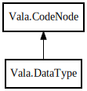

DataType
Object Hierarchy:

Description:
public abstract class DataType :
CodeNode
A reference to a data type. This is used to specify static types of expressions.
Content:
Properties:
- public weak TypeSymbol data_type { get; set; }
The referred data type.
- public bool floating_reference { get; set; }
Specifies that the expression transfers a floating reference.
- public bool is_dynamic { get; set; }
Specifies that the type supports dynamic lookup.
- public bool nullable { get; set; }
Specifies that the expression may be null.
- public bool value_owned { get; set; }
Specifies that the expression or variable owns the value.
Creation methods:
Methods:
Fields:
Inherited Members:
All known members inherited from class Vala.CodeNode